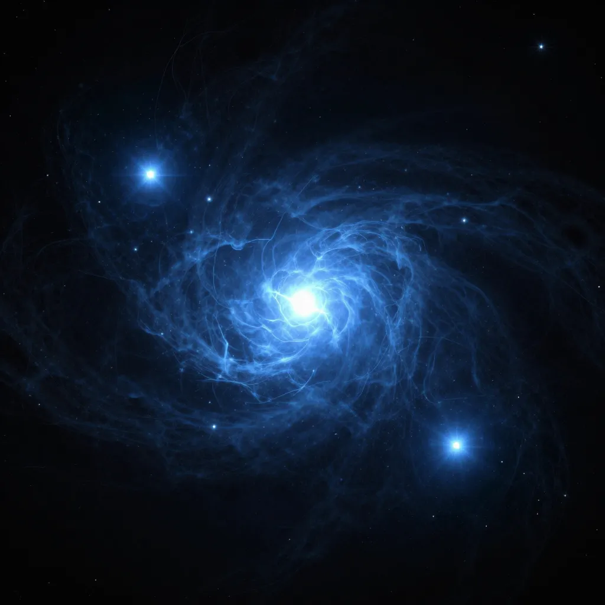

Population III
A sound instrument · ~13 billion years, compressed
Before this begins, there is hydrogen. And helium. And nothing else.
Hydrogen
Big Bang · 13.8 Gya
Helium
Big Bang · 13.8 Gya
Carbon
First stars · ~200 Mya
Oxygen
Core collapse · ~200 Mya
Nitrogen
AGB stars · later generations
Iron
Supernovae · many generations
Use headphones if you have them. The first sounds are very low.
You are not made of the universe.
You are made of what the universe learned to make.
The hydrogen in you predates stars.
Everything else went through at least one stellar interior before it reached you.
